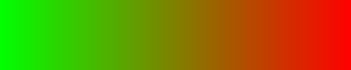
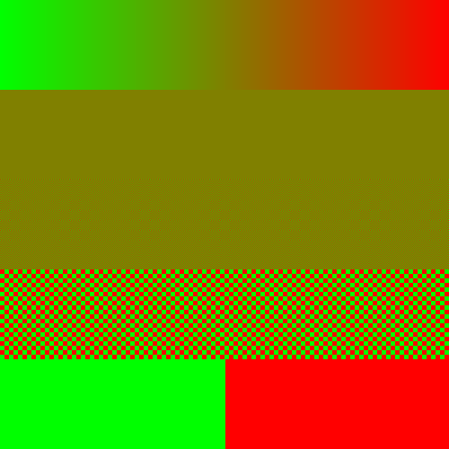
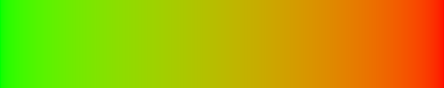
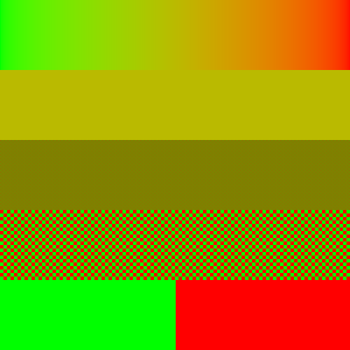

In this interactive, we will explore various digital representations of color. The theory of color is an incredibly complicated combination of physics, art, biology, and chemistry. You can learn more about how color works through the resources below:
Assignment Goals:
getImageData() and putImageData() to draw directly to a <canvas>
Instructions for you to follow in this document will be highlighted in blue.
ctx.fill(). To specify a color to fill with, we set ctx.fillStyle to a string representing a color. You can see a variety of ways of specifying color at the MDN. Note that some of the more advanced color spaces like Lab are only available in Safari.
Complete the following:
<canvas> in it.
draw_triangles
ctx.
ctx.beginPath, ctx.moveTo, ctx.lineTo, and ctx.stroke to draw a triangle between the points:
ctx.fillStyle = "red";
ctx.fill() to fill the triangle in red
ctx.fillStyle = "rgba(0,255,0,.5)"; This specifies a color which has no red, is maximally blue, has no green, and has a transparency (alpha) value of .5 (halfway between invisible = 0 and opaque = 1).
ctx.fillStyle to "rgba(0,0,255,.1)". This is a pure blue color which is almost entirely transparent.
ctx.fillRect(150,175,200,100);. This fills a rectangle with the current ctx.fillStyle whose top left corner is at 150,175, and has width 200 and height 100.
By default, we specify colors with an r, g, and b value, which specifies the intensity of the red, green, and blue lights that make up the pixels on a screen. In this interactive, these values will vary from 0 to 255.
Complete the following:
draw_rgb() which does the following:
ctx
ctx.fillStyle to `rgb(${x},${y},0)`. The backtick ` character creates a template literal, which is a fancy type of string that you can insert expressions to be evaluated into. The ${x} in the string gets translated to the value of the variable x.
Note: you can also use "rgb(" + x + "," + y + ",0)" to create the same string. In this case the variables x and y get type coerced into strings.
ctx.fillRect(x,y,1,1). The 1s are the width and height of the rectangle to be filled.
Complete the following:
<input type="range" id="inp" min=0 max=500 onchange="draw_rgb()"> to your body.
draw_rgb() function code that grabs the value of this input element and uses it as the blue value for each pixel:
var inp = Number(document.getElementById("inp").value);
onchange="draw_rgb()" to oninput="draw_rgb()" so it tries to redraw the image while you're moving the slider, as opposed to just when you've finished moving the slider.
Use your convert_a_to_b function from previous assignments to rescale the x and y values to go from 0-255 instead of 0-500.
Instead of specifying a color in terms of its Red, Green, and Blue values, we can also specify it in terms of its Hue, Saturation, and Lightness.

All of the colors in the Hue color wheel above have saturation at 100% and lightness set to 50%. Notice, however, that they don't look perfectly the same brightness: the blues look darker than the yellows. A more faithful measure can be gotten by using a weighted average that more heavily weights green (to which our eyes are most sensitive) called luma, denoted with the symbol Y.
Create a new functiondraw_hslwhich is similar todraw_rgb, but setsctx.fillStylefor each pixel to`hsl(${x},${y}%,${k}%)`, where:
- x has been rescaled from 0 to 360,
- y has been rescaled from 0 to 100, (note the percent symbol! s and l are specified in terms of percentages)
- k (the input from your
<input>element) has been rescaled from 0 to 100
Create a new function draw_grayscale that sets the r, g, and b, values all to the rescaled x value. This should produce a grayscale spectrum.
This spectrum is perceptually linear: the difference between shades 10 pixels apart appears roughly the same across the spectrum. However it is not linear in terms of physics: the midpoint gray (127.5, 127.5, 127.5) is only creating about 22% as many photons of light as the full (255, 255, 255) white at the end of the spectrum, although the exact value depends on your device.
Normally, this is what we want, but it means that any effect that averages colors will be incorrect. This includes:
Complete the following:
draw_grayscale function so that:
ctx.fillStyle to "black"
ctx.fillStyle to "white"
ctx.fillStyle to `rgb(${k},${k},${k})`, where k is the value of your input slider
console.log to determine the value of k.
draw_grayscale function to indicate the number you found. This value will vary based on your monitor.
Create a new functiondraw_gradientthat usesconvert_a_to_bto set:
- r to vary from 255 to 0 as x goes from 0 to 500
- g to vary from 0 to 255 as x goes from 0 to 500
- b to always be 0
The result should be an image that looks like:

This isn't great: the color in the middle is not a proper blur of the red and green, as we can see in the image below:

The rows of this image are:
To fix our gradient we will want to:
Complete the following:
convert_a_to_b in your loop over each pixel to set:
r = 255*(r)**(1/2.2)
ctx.fillStyle = `rgb(${r},${g},${b})` to set the fill style of the pixel, then fill it with ctx.fillRect(x,y,1,1);
The resulting spectrum should look more like:

Notice the yellow in the middle more closely matches a true blend of green and red, as seen in our checkerboard comparison below:

The rows of this image are:
It's tempting to want to store each pixel as a three-element array of red, green, and blue values, and then each row of an image as an array of pixels, and then the entire image as an array of rows. However, this is somewhat wasteful: each array takes up a small amount of overhead and each time we look into an array it takes a small amount of time. But remember that our 500x500 image (which is only a small part of a modern 1920x1080 screen) has 250,000 pixels. These small overheads add up.
Fortunately, we know exactly how big these arrays are, so we can flatten them into one single large array. Instead of:
[We represent our image as:
[[pixel00.r,pixel00.g,pixel00.b],[pixel01.r,pixel01.g,pixel01.b],...], //row 0
[[pixel10.r,pixel10.g,pixel10.b],[pixel11.r,pixel11.g,pixel11.b],...], //row 1
...
]
[Notice that we added a new value to each pixel (a for alpha). Since the number of numbers per pixel is now a power of 2, the math is faster and we get to store an extra piece of information, usually transparency information: how transparent a pixel is from 0 (fully transparent) to 255 (fully opaque). You can watch a Computerphile video that walks through this technique of storing an image as a single array.
pixel00.r,pixel00.g,pixel00.b,pixel00.a,pixel01.r,pixel01.g,pixel01.b,pixel01.a,..., //row 0
pixel10.r,pixel10.g,pixel10.b,pixel10.a,pixel11.r,pixel11.g,pixel11.b,pixel11.a,..., //row 1
...
]
At the very end of yourdraw_gradientfunction, callconsole.log(ctx.getImageData(0,0,500,500));. The result should look like:
ImageData {data: Uint8ClampedArray(1000000), width: 500, height: 500, colorSpace: 'srgb'}
data: Uint8ClampedArray(1000000) [0, 255, 0, 255, 15, 255, 0, 255, 21, 255, 0, 255, 25, 254, 0, 255, 28, 254, 0, 255, 31, 254, 0, 255, 34, 254, 0, 255, 37, 253, 0, 255, 39, 253, 0, 255, 41, 253, 0, 255, 43, 253, 0, 255, 45, 252, 0, 255, 47, 252, 0, 255, 49, 252, 0, 255, 50, 252, 0, 255, 52, 251, 0, 255, 53, 251, 0, 255, 55, 251, 0, 255, 56, 251, 0, 255, 58, 251, 0, 255, 59, 250, 0, 255, 60, 250, 0, 255, 62, 250, 0, 255, 63, 250, 0, 255, 64, 249, 0, 255, ...]
colorSpace: "srgb"
height: 500
width: 500
[[Prototype]]: ImageData
This .data array is the color data array. The first 4 numbers (0,255,0,255) represent the r, g, b, and a of the top left pixel. The next 4 numbers (15,255,0,255) represent the r, g, b, and a of the next pixel over, etc. All these pixels should have alpha of 255, since none of them have any transparency yet. Before you draw to the canvas, every pixel is set to (0,0,0,0): fully transparent black.
Complete the following:
draw_rgb_fast which:
ctx
ctx.getImageData(0,0,500,500) and stores it in a variable id
Number(document.getElementById("r").value) where "r" is replaced by the name of your input box.
function set_rgba(imagedata,x,y,r,g,b,a) {
var pos = y*imagedata.width+x;
imagedata.data[pos*4] = r;
imagedata.data[pos*4+1] = g;
imagedata.data[pos*4+2] = b;
imagedata.data[pos*4+3] = a;
}
ctx.putImageData(id,0,0).
onchange, set it to have oninput="draw_rgb_fast()".
The downside of writing to our canvas this way is that we can only specify color in terms of RGB. If we want to replicate our HSL visualizer, we'll need a function for converting between HSL and RGB. Below is one such algorithm. It first computes chroma, C, which is the difference between the maximum and minimum of R, G, and B. Luminance, L, is the average of the maximum of R, G, and B, and the minimum of R, G, and B. Knowing these two values is enough to solve for the max and min, and then we figure out which of R, G, and B should be the max, which the min, and which should be interpolated based on the hue, H.
function HSL_to_RGB(H,S,L) {
var R,G,B;
var C;
if (L <= .5) {
C = S*2*L;
}
else {
C = S*2*(1-L);
}
var max = L+C/2;
var min = L-C/2;
if (H < 60) {
R = max;
G = convert_a_to_b(H,0,60,min,max);
}
else if (H < 120) {
R = convert_a_to_b(H,60,120,max,min);
G = max;
}
else if (H < 180) {
R = min;
G = max;
}
else if (H < 240) {
R = min;
G = convert_a_to_b(H,180,240,max,min);
}
else if (H < 300) {
R = convert_a_to_b(H,240,300,min,max);
G = min;
}
else {
R = max;
G = min;
}
return([255*R,255*G,255*B]);
}
The image above has a plot of the R, G, and B values from 0 to 255 as a function of H. Use the code above and the chart to fill in the missing calculation of B.